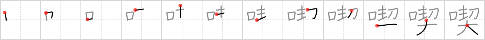

喫
← →
consume

Reading:
On-Yomi: キツ
Heisig story:
Mouth . . . pledge.
Koohii stories:
1) [Raichu] 10-12-2006(146): This means eat/drink/smoke. Maybe you make a pledge to stop gutsing/binging/puffing, but your own mouth is tempting you to put something in it.
2) [Katsuo] 17-12-2007(112): I make my mouth pledge to consume less.
3) [CountPacula] 23-10-2008(64): New American pledge of allegiance: I will consume.
4) [radical_tyro] 5-7-2007(25): After pledging, Alice and the sorority consumed the St. Bernard with their mouths.
5) [TheSleeve] 5-11-2007(15): You have an eating problem and always CONSUME too much, cramming it in your MOUTH. Here, you make a PLEDGE to CONSUME less, maybe by keeping your MOUTH shut more often.